Чтение снимка, местами неуверенное. Сверьте со снимком.
Собственноручные показания арестованного
Кореца Моисея Абрамовича
[нрзб]
контрреволюционная группа, которая у нас возникла в 1935 г.
в 1935 г. на почве борьбы с руководством Химмаша [нрзб]
нашего института, разрабатывалась, по поводу нашего института,
[нрзб] на две группировки, нас [нрзб] и [нрзб] с
их людьми, настроения которых были аналогичны нашим.
Быстро, от критики директора, мы перешли к критике
и советской страны. С этого момента [нрзб] середины
года я считаю, что наша активная контрреволюционная
[нрзб] против партии и советского правительства и,
[нрзб], как я теперь понимаю, против всего советского
[нрзб], против социализма. Вместе со мной были сотрудники
института близкие мне люди, с которыми я неоднократно
[нрзб] обсуждал свои взгляды. Это были Александр Вайсберг
[нрзб] Шубников и [нрзб] руководящие лица
[нрзб] Лев Давидович Ландау. (С этими людьми
мы быстро познакомились, с нами обсуждали политические вопросы,
и вырабатывали свои контрреволюционные взгляды. Иногда при-
присутствовали другие сотрудники института, близкие к
[нрзб], Кауфман, Румер, [нрзб] тоже было на собраниях
их, я, Шубников и Ландау.
[нрзб] наша деятельность в этот период заключалась
в этих собраниях на которых высказывались критические
замечания партии и правительства. Мы считали, что коммунизм не
[нрзб], что большинство из нас трудящихся,
[нрзб] страну. Вайсберг, в частности, говорил, что коммунизм
сводится к простой продаже советского правительства. Мы [нрзб]
не [нрзб] идеи и окружающие нас люди.
Борьба с Давидовичем кроме [нрзб], нами организовывались
и нелегальные. Были собрания на квартире у Ландау у Шубникова
всех перечисленных мной людей. Про эти общие контрреволюционные
собрания никогда не говорилось.
[нрзб] Ландау мне известно о контр-революционных настроениях
[нрзб], но в какой это было период и
[нрзб] я не знаю, т.к. сам с ним не встречался. Впоследствии
[нрзб] на стороне Давидовича, но был ли с ним связан
[нрзб] работой мне неизвестно, т.к. с [нрзб] Давидовичем
и мы были в неприязненно враждебных отношениях.
Чтение снимка, местами неуверенное. Сверьте со снимком.
[нрзб] контрреволюционных разговоров
лично разговаривал и встречался со мною в одном коридоре
[нрзб], Флиппе, но эти разговоры в этот период
года далеко не заходили.
[нрзб] я был связан общими контрреволюционными взглядами
[нрзб] в высшей определенной собрании также с Ландау и
[нрзб].
[нрзб] период и осенью до моего ареста мы добились перевода
ряда технических тем и отделов из У.Ф.Т.И. в другие места.
[нрзб] мне казалось, что это только увеличит число научных
[нрзб] института, но теперь я вижу, что наряду с [нрзб]
[нрзб] работой Давидовича и это разлагало институт и
[нрзб] его ценность для советского правительства. Таким
[нрзб] кроме субъективно контрреволюционной деятельности,
[нрзб] косвенно, участвовал и в этой объективно вредной [нрзб]
[нрзб].
В апреле ноябре я был за все это исключен (правда под
[нрзб] Давидовича) из комсомола и уволен из института,
[нрзб] ноября я был арестован и пробыл в тюрьме до 6 апреля,
и был освобожден по решению киевской прокуратуры. На аресте
[нрзб] называли Давидович и Кравченко, но заместитель в тот период.
10/IV 38. Корин
3/V 38.
[нрзб] время после своего освобождения я никакой [нрзб]
[нрзб] деятельностью не занимался. Однако мне тогда казалось
[нрзб] опубликованные [нрзб] и поученные [нрзб]
[нрзб] контроля, и в связи со [нрзб] увольнением, что мы
[нрзб] политические явления я расценивал как [нрзб]
[нрзб], что моя прошлая контрреволюционная критика [нрзб]
[нрзб], что я опять становлюсь на советскую позицию. Но это было
[нрзб] контрреволюционный дух по существу во мне оставался. Это
[нрзб] ясно при докладе проекта данных о [нрзб]
[нрзб] этот проект я встретил весьма враждебно и в связи
[нрзб] новая контрреволюционная агитация. Надо сказать, что
[нрзб] в это время не было, но все перечисленные мною
[нрзб] вполне разделяли мою точку зрения на этот проект.
[нрзб] встречался я в этот период с [нрзб] образом
[нрзб] и Шубниковым и мы постоянно вели разговоры
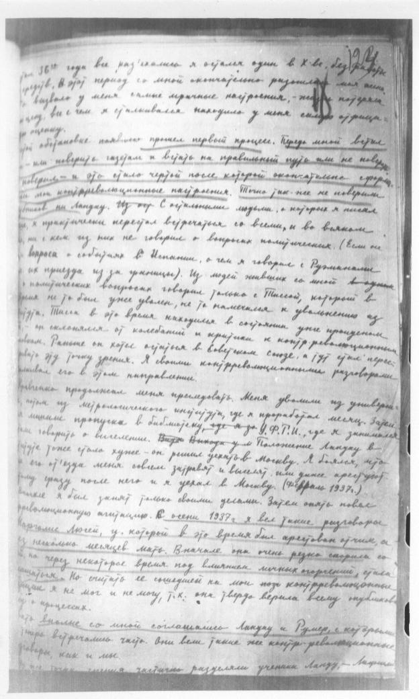
Чтение снимка, местами неуверенное. Сверьте со снимком.
[нрзб] 36-го года все разъехались я остался один в Х.ве. [нрзб]
[нрзб]. В этот период со мной окончательно [нрзб]
[нрзб] вызвало у меня самые мрачные настроения, [нрзб]
[нрзб], все с кем я сталкивался находили у меня [нрзб]
[нрзб] отчаяние.
[нрзб] абрамовские наконец прошел первый процесс. Перед мной встал
[нрзб] не поверю людям и верю на правильный путь мы не [нрзб]
[нрзб] и это стало чертой после которой [нрзб]
[нрзб] мои контрреволюционные настроения. Точно так же не поверил
[нрзб] ни Ландау. [нрзб] С остальными людьми, о которых я писал
[нрзб], я практически перестал встречаться со всеми, и во всяком
[нрзб] ни с кем из них не говорил о вопросах политических. (Если не
[нрзб] вопроса о событиях в Испании, о чем я говорил с Румерманом
[нрзб] прихода из за границы). Из людей живших со мной [нрзб]
[нрзб] политических вопросов говорил только с Таллей, который в
[нрзб] не то был уже уволен, не то намечен к увольнению из
[нрзб]. Талля в это время находился в состоянии [нрзб]
[нрзб] от колебаний и критики к контрреволюционным
[нрзб]. Раньше он кое-где осмеливался в советском союзе, а [нрзб] уже пере-
[нрзб] эту точку зрения. Я своими контрреволюционными разговорами
[нрзб] его в этом направлении.
[нрзб] продолжал меня преследовать. Меня уволили из универ-
[нрзб] из метрологического института, где я проработал месяц. Затем
[нрзб] пропуск в библиотеку, где я [нрзб] У.Ф.Т.И., где я занимался
[нрзб] говорю о виселице. [нрзб] Положение Ландау в-
[нрзб] тоже стало хуже — он решил уехать в Москву. Я боялся, что
[нрзб] отсюда меня совсем загрызут и [нрзб], или даже арестуют
[нрзб] сразу после него и я уехал в Москву. (Февраль 1937 г.)
[нрзб] я был занят только своими делами. Затем опять новая
[нрзб] агитацию. В осени 1937 г. я вел такие разговоры с
[нрзб] людей, у которой в это время был арестован муж, а
[нрзб] несколько месяцев назад. Вначале она очень редко сходилась со
[нрзб], но перед некоторое время под влиянием личных потрясений, стала
[нрзб]. Но смотрю ее следующей на мои мои контрреволюционные
[нрзб] я не мог и не могу, т.к. она твердо верила всему публично
[нрзб] и процессах.
[нрзб] Вполне со мной соглашались Ландау и Румер, с которыми
[нрзб] встречались также. Они вели такие же контр-революционные
разговоры, как и мы.
[нрзб] частично разделяли убеждения Ландау, [нрзб]
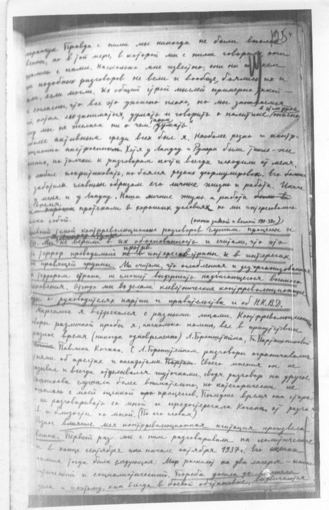
Чтение снимка, местами неуверенное. Сверьте со снимком.
[нрзб]. Правда с ними мы никогда не были [нрзб]
[нрзб], но в той мере, в которой мы с ними говорили они
[нрзб] с нами. Насколько мне известно, они не [нрзб]
[нрзб] подобных разговоров не вели и вообще, дальше их и
[нрзб], если можно. Их общий строй мыслей примерно такой —
[нрзб] согласны, что все это ужасно плохо, но мы [нрзб]
[нрзб], порой задумываясь, думают и говорят о [нрзб]
[нрзб] мне не писала ни о чем [нрзб].
[нрзб] активным среди всех был я. Наиболее резко и контр-
[нрзб] настроения. Хотя у Ландау и Румера были такие же
[нрзб], но реже и разговоры почти всегда исходили от меня,
[нрзб] покрикивая, но боясь резких формулировок. Это было
[нрзб] главным образом его личные пища и работа. [нрзб]
у меня и у Ландау. Наши личные пища и работа [нрзб]
[нрзб] впрочем проходили в хороших условиях но мы [нрзб]
[нрзб] своей.
(очень резко и весной 1937-38 г.)
[нрзб] темой контрреволюционных разговоров [нрзб] являлись и
[нрзб]. Мы не верили в их обоснованность и считали, что это
[нрзб] террор проводимый [нрзб] против [нрзб] страны и в интересах
[нрзб] правящей группы. Мы считали, что ослабление и дезорганизация
[нрзб] террором страны не имеет [нрзб] надвигающихся военных
[нрзб]. Отсюда мы делали неизбежные контрреволюционные
[нрзб] о руководителях партии и правительства и об Н.К.В.Д.
Параллельно я встречался с разными лицами. Контрреволюционные
[нрзб] различной пробы я, насколько помню, вел в присутствии
разное время (никогда одновременно) А. Бронштейна, Б. [нрзб]
[нрзб] Павлика Когана. С А. Бронштейном разговоры ограничивались
[нрзб] об арестах и анекдотами. [нрзб] своего мнения он не
[нрзб] и всегда отделывался шуточками, сводя разговор на другое
[нрзб] слушала более внимательно, но категорически не
[нрзб] с моей оценкой про процессов. Последнее время она [нрзб]
не разговаривала со мной и предостерегала Когана от разго-
[нрзб] и [нрзб] со мной. (По его словам)
[нрзб] влияние моя контрреволюционная агитация произвела
[нрзб]. Первый раз мы с ним разговаривали на [нрзб]
и в конце сентября или начале октября 1937 г. Его [нрзб]
[нрзб] тогда была следующая: Мир расколот на два лагеря — капи-
талистический и социалистический. Борьба должна [нрзб]
[нрзб] и поэтому, как всегда в боевой обстановке, [нрзб]
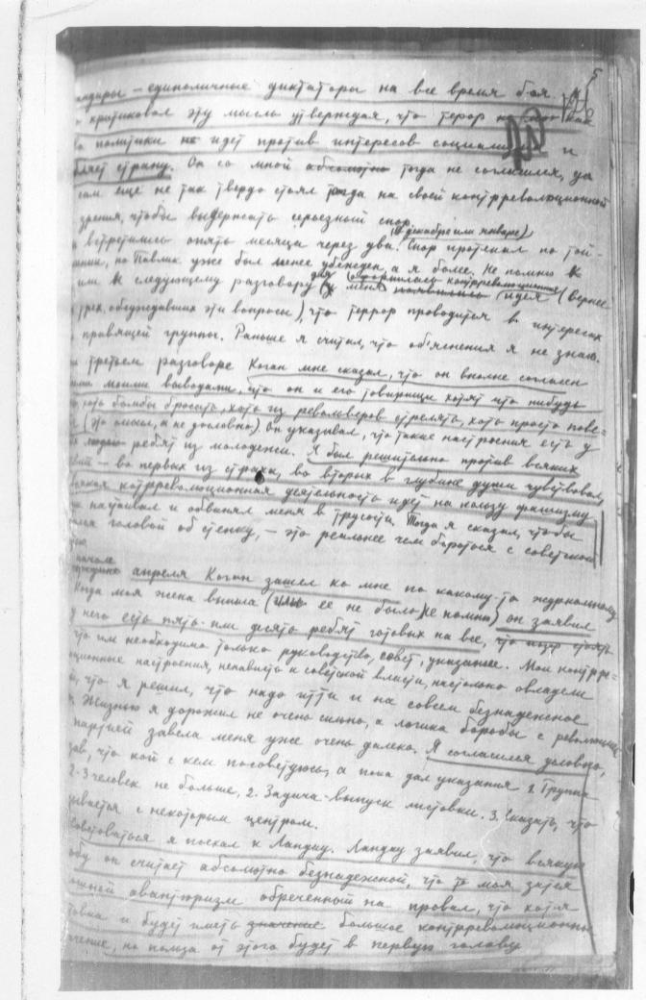
Чтение снимка, местами неуверенное. Сверьте со снимком.
[нрзб] — единоличные диктаторы на все время боя. [нрзб]
[нрзб] приучал эту мысль утверждая, что террор [нрзб]
[нрзб] наносит не идет против интересов социализма и
[нрзб] страну. Он со мной абсолютно тогда не согласился, да
[нрзб] еще не так твердо стоял тогда на своей контрреволюционной
[нрзб], чтобы выдержать серьезный спор.
и вернулись опять месяца через два. (декабрь или январь)
[нрзб], но Павлик уже был менее убежден, а я более. К нашему [нрзб]
[нрзб] к следующему разговору [нрзб] (современная контрреволюционная
[нрзб], обсуждавших эти вопросы), что террор проводился в интересах
правящей группы. Раньше я считал, что объяснения я не знаю.
[нрзб] разговоре Коган мне сказал, что он вполне согласен
[нрзб] мнению [нрзб], что он и его товарищи хоть что-нибудь
[нрзб] должно бросать, хотя из револьверов стрелять, хотя просто пове-
[нрзб] (это неясно, не дословно). Он указывал, что такое настроение есть у
[нрзб] молодежи из молодежи. Я был решительно против всяких
[нрзб] — во-первых из страха, во-вторых в глубине души чувствовал,
[нрзб] контрреволюционная деятельность идет на пользу фашизму,
[нрзб] научные и обычные меня в [нрзб]. Тогда я сказал, чтобы
[нрзб] головной об успехе, — это решится тем борьбой с советским
[нрзб]
[нрзб] апреля Коган зашел ко мне по какому-то [нрзб]
[нрзб] меня очень [нрзб] ([нрзб] ее не больше не помню) он заявил
у него есть пять или десять ребят готовых на все, что [нрзб]
что им необходима только руководство, совет, указание. Мы контрре-
волюционные настроения, ненависть к советской власти, необходимо объединить
и что я решил, что надо идти и на совсем безнадежное.
[нрзб] я дорожил не очень сильно, а логика борьбы с [нрзб]
[нрзб] завела меня уже очень далеко. Я согласился делово,
[нрзб], что мой с кем посоветуюсь, а пока дал указание 1. Группа
2-3 человек не больше, 2. Задача — выпуски листовок. 3. Смотреть, что
[нрзб] с некоторыми центрами.
[нрзб] я поехал к Ландау. Ландау заявил, что [нрзб]
[нрзб] он считает абсолютно безнадежной, что [нрзб] моя [нрзб]
[нрзб] авантюризм обреченный на провал, что [нрзб]
[нрзб] и будут мало [нрзб] Большое контрреволюционное
[нрзб], на плечах от этого будет в первую голову
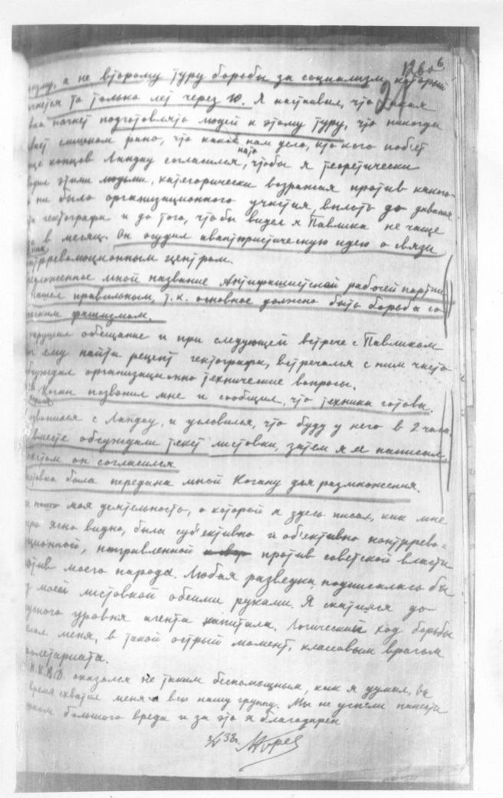
Чтение снимка, местами неуверенное. Сверьте со снимком.
[нрзб], а не [нрзб] туру борьбы за социализм [нрзб]
[нрзб] та только мой через 10. Я настаивал, что [нрзб]
[нрзб] начнут подготовлять людей к этому туру, что никогда
[нрзб] слишком рано, что никак нам дело, что кого-нибудь
[нрзб] концов Ландау согласился, чтобы я теоретически
[нрзб] этих людей, категорически возражая против какого-
[нрзб] было организационного участия, вплоть до давания
[нрзб] листовок и до того, чтобы видел и Павлика не чаще
[нрзб] месяца. Он осудил авантюристическую идею о [нрзб]
контрреволюционном центре.
[нрзб] мной название Антифашистской рабочей партии
[нрзб] правильным, т.к. основное должно быть борьба со
[нрзб] фашизмом.
[нрзб] обещание и при следующей встрече с Павликом
я ему найду рецензент листовок, встречался с ним когда
[нрзб] организационно технические вопросы.
[нрзб] Коган позвонил мне и сообщил, что техника готова.
[нрзб] с Ландау, и договорился, что буду у него в 2 часа
[нрзб] обсуждали текст листовок, затем я ее написал
[нрзб] он согласился
[нрзб] была передана мной Когану для размножения.
и этого моя деятельность, о которой я здесь писал, как мне
[нрзб] ясно видно, была субъективно и объективно контррево-
люционной, направленной [нрзб] против советской власти
[нрзб] моего народа. Любая разведка подхватилась бы
[нрзб] моей листовкой обеими руками. Я скатился до-
[нрзб] уровня агента [нрзб]. Логический ход борьбы
[нрзб] меня, в такой острый момент, классовым врагам
[нрзб].
Н.К.В.Д. оказались не такими беспомощными, как я думал, во
время [нрзб] меня и всю нашу группу. Мы не успели нанести
[нрзб] большого вреда и за это я благодарен
X/38. Корин
Чтение снимка, местами неуверенное. Сверьте со снимком.
стр. 1.
[нрзб] Приступая к организации контрреволюционной
[нрзб] рабочей партии" мы исходили из следующего
[нрзб], которое здесь и излагаю. [нрзб]
[нрзб] что они были [нрзб]
[нрзб] и направленные по существу не только
[нрзб] руководства партии и советским правительством, но и
[нрзб] всего советского народа.
[нрзб] процессе классовой борьбы рабочего класса [нрзб]
[нрзб] буржуазии, в процессе строительства базы социализма
[нрзб] общества вырабатывается резко централизованная диктатура.
[нрзб] была закончена, я думал, что [нрзб] это было
[нрзб] в борьбе, [нрзб] будет целесообразна в
[нрзб], в котором ликвидировался враждебные классы.
К 35 г. мне казалось, что действительно начинает разверты-
[нрзб] советская демократия.
[нрзб], однако моим контрреволюционным установкам, такая демократия
[нрзб] оставалась половинчатой. Раз начавшись, народная демократия
[нрзб] должна бы развиваться, и [нрзб] для группы [нрзб] людей возникла
[нрзб] централизованную диктатуру возникла опасность, что
[нрзб] сменит их, во всяком случае власть ее будет
[нрзб] ограничена. После небольших колебаний в 35-36 г. эта
[нрзб] резко повернула назад, против развивая демократии,
[нрзб] власти. Т.к. в нашей стране, где буржуазных классов нет,
поворот никем не мог быть оправдан, и т.к. не было ни
[нрзб] социальной группы в нем заинтересованной, то
[нрзб] такой переворот мог быть только методом
[нрзб] террора и демагогии. Иностранное [нрзб]
[нрзб] существовала. Конечно в небольших масштабах суще-
[нрзб] не подпольное заговорщическое движение отдельных [нрзб]
[нрзб] групп. Любое советское правительство вело
[нрзб] эту борьбу. Но то, что эти явления, если по-
[нрзб] не являются решающими, были объявлены
[нрзб] причиной всей [нрзб] внутренней политики
[нрзб] власти, террора, ожесточения диктатуры, рассматри-
[нрзб] как попытка завуалировать [нрзб] причины
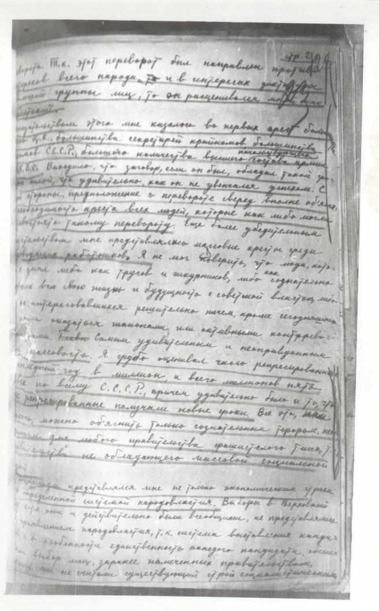
Чтение снимка, местами неуверенное. Сверьте со снимком.
[нрзб]. Т.к. этот переворот был направлен против
[нрзб] всего народа, [нрзб] и в интересах [нрзб]
[нрзб] группы лиц, то он расценивался нами как
[нрзб]
[нрзб] этого мне казалось во первых арест [нрзб]
[нрзб] Ц.К., Блюминцева секретарей крайкомов большевиков
[нрзб] С.С.С.Р., большого количества высшего [нрзб]
Н.К.В.Д. Выходило, что заговор, если он был, обладал такой [нрзб]
[нрзб], что удивительно, как он не увенчался успехом. С
[нрзб] стороны, предположение о перевороте сверху [нрзб] объясняло
[нрзб] ареста всех людей, которые как либо могли
[нрзб] такому перевороту. Еще более удивительным
[нрзб] мне представлялись массовые аресты среди
[нрзб] работников. Я не мог поверить, что люди, кото-
[нрзб] либо как трусов и шкурников, либо как сознательно
[нрзб] всю свою жизнь и будущность с советской властью, мог-
[нрзб] интересовавшихся решительно никем, кроме сегодняшнего
[нрзб] ожидающих [нрзб] или активными контррево-
[нрзб]. Таково самым удивительным и неоправданным
[нрзб]. Я грубо оценивал число репрессированных
[нрзб] год в миллион, и всего миллионов пять
[нрзб] по всему С.С.С.Р., причем удивительно было и то, что
[нрзб] репрессированные получали новые уроки. Все это, [нрзб]
[нрзб] можно объяснить только сознательным террором, на-
[нрзб] для любого правительства [нрзб] типа, [нрзб]
[нрзб] не обладающего массовой [нрзб]
[нрзб] представлялся мне не только экономическим уроном
[нрзб] системой народников. Выборы в Верховный
[нрзб] они и действительно были всеобщими, не представлялись
[нрзб] народников, т.к. система внесения кандида-
[нрзб] в особенности единственного кандидата [нрзб], [нрзб]
выбор лиц, заранее намеченных правительством,
[нрзб] не открыли существующий строй социалистическим
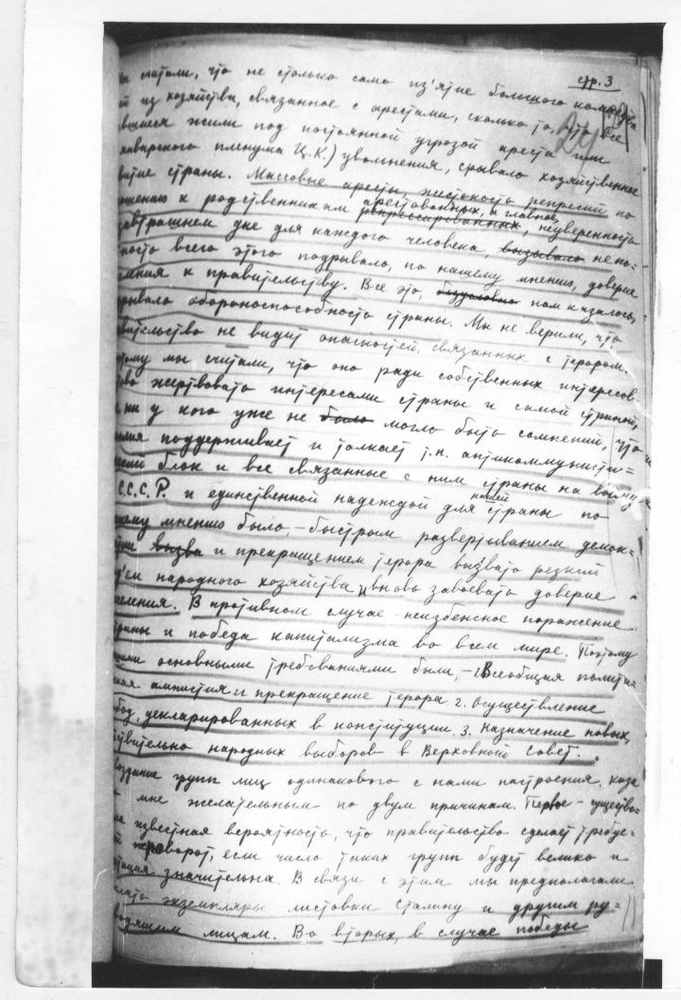
Чтение снимка, местами неуверенное. Сверьте со снимком.
стр. 3
[нрзб] считали, что не столько само изъятие большого количества
[нрзб] из культуры, связанные с арестами, сколько то, что все
[нрзб] тысяч под постоянной угрозой ареста или
[нрзб] минута (К.К.) увольнения, срывало хозяйственное
[нрзб] страны. Массовые аресты, [нрзб] репрессий по
[нрзб] и родственникам арестованных, и [нрзб], неуверенности
[нрзб] дня для каждого человека, [нрзб] немо-
[нрзб] всего этого подрывало, по нашему мнению, доверие
[нрзб] и правительству. Все это, [нрзб] нам казалось,
[нрзб] обороноспособность страны. Мы не верили, что
[нрзб] не видят опасностей, связанных с террором.
[нрзб] мы считали, что оно ради собственных интересов
[нрзб] жертвовало интересами страны и силой страны,
[нрзб] у кого уже не [нрзб] могло быть сомнений, что
[нрзб] подозрительней и [нрзб] т.н. антикоммунистиче-
[нрзб] блок и все связанные с ним страны на войну
С.С.С.Р. и единственной надеждой для страны по-
[нрзб] мнение было, — быстрейшим развертыванием демо-
[нрзб] воздуха и прекращением террора вызвало резкий
[нрзб] народного хозяйства и вновь завоевало доверие [нрзб]
[нрзб]. В противном случае неизбежное поражение
[нрзб] и победа капитализма во всем мире. Поэтому
[нрзб] основными требованиями были, — 1. Всеобщая политиче-
[нрзб] амнистия и прекращение террора 2. осуществление
[нрзб], декларированных в конституции. 3. Назначение новых,
действительно народных выборов в Верховный Совет.
[нрзб] групп лиц одинакового с нами настроения, кото-
[нрзб] мы терялись по двум причинам. Первое — [нрзб]
[нрзб] вероятностью, что правительство сумеет [нрзб]
переворот, если число таких групп будут велико и
[нрзб] замениться. В связи с этим мы предполагали
[нрзб] [нрзб] листовки Сталину и другим ру-
[нрзб] лицам. Во вторых, в случае победы
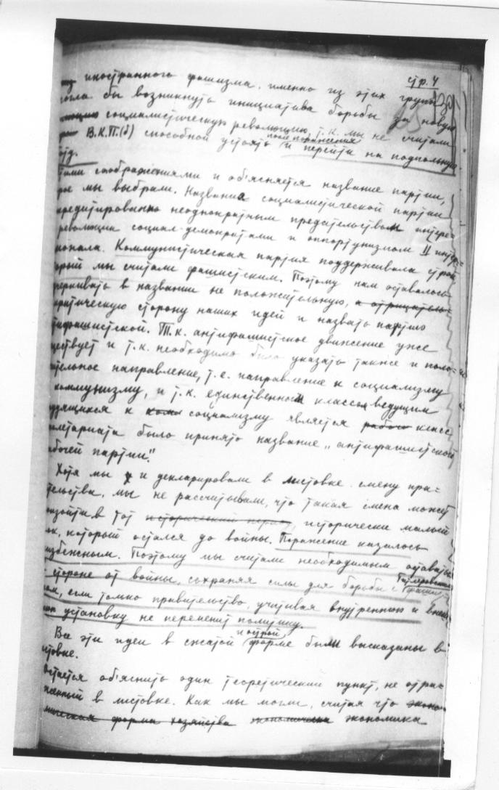
Чтение снимка, местами неуверенное. Сверьте со снимком.
стр. 4
[нрзб] иностранного фашизма, именно из этих групп
[нрзб]. бы возникнуть инициатива борьбы за [нрзб]
[нрзб] социалистическую революцию т.к. мы не считали
[нрзб] В.К.П.(б) способной устоять [нрзб] и перейти на подпольное
[нрзб].
[нрзб] соображениями и объясняется название партии,
[нрзб] мы выбрали. Названия социалистической партии
[нрзб] неоднократным предательством интере-
[нрзб] социал-демократами и оппортунизмом II интер-
национала. Коммунистическая партия [нрзб]
[нрзб] мы считали фашистским. Поэтому нам оставалось [нрзб]
[нрзб] в названии не положительную, а отрицательную
[нрзб] сторону наших идей и назвали партию
[нрзб]. Т.к. антифашистское движение уже
[нрзб] и т.к. необходима [нрзб] указать также и наше
[нрзб] направление, т.е. направление к социализму
[нрзб], и т.к. единственный класс ведущий
[нрзб] к [нрзб] социализму является рабочий класс
[нрзб] было принято название „антифашистской
рабочей партии“.
Хотя мы [нрзб] и декларировали в листовке смену пра-
вительства, мы не рассчитывали, что такая смена может
[нрзб] в тот [нрзб] исторический момент
[нрзб], который остался до войны. Партийные казались
[нрзб]. Поэтому мы считали необходимым [нрзб]
[нрзб] от войны, сохраняя силы для борьбы [нрзб]
[нрзб], если только правительство, укрепив внутреннюю и внеш-
[нрзб] установку не переменит политику.
Все эти идеи в старой [нрзб] форме были высказаны в
[нрзб].
[нрзб] объясню один теоретический пункт, не отра-
[нрзб] в листовке. Как мы могли, считая что [нрзб]
[нрзб] форма хозяйства [нрзб]
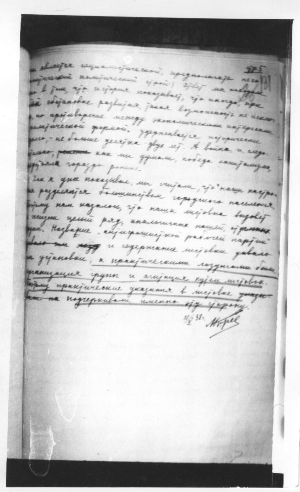
Чтение снимка, местами неуверенное. Сверьте со снимком.
стр. 5
[нрзб] социалистической, [нрзб]
[нрзб] капиталистической страны: [нрзб] на [нрзб]
[нрзб] уже, что [нрзб] [нрзб], что [нрзб], [нрзб]
[нрзб] объяснение разлуки, такой [нрзб], [нрзб]
[нрзб] противоречие между экономическими интересами
[нрзб] формой. [нрзб] интересов
[нрзб], — не больше [нрзб] где нет. А война, и [нрзб]
[нрзб], [нрзб] как мы думали, победа капитализма
[нрзб] гораздо [нрзб].
[нрзб] я уже [нрзб], мы считаем, что наша [нрзб]
[нрзб] буржуазия большевиков [нрзб] населения,
[нрзб] нам казалось, что наша листовка вызовет
[нрзб] целый ряд, аналогичных нашей, [нрзб]
[нрзб]. Название „антифашистской рабочей партии“
[нрзб] и содержание листовок давало
[нрзб] установки, а практически [нрзб] было
[нрзб] групп и агитация путем листовок.
[нрзб] практически указанным в листовке [нрзб]
[нрзб] поддерживали именно эту сторону.
17/V 38. Корин
стр.132 Допрос 22.05.38 стр.133 стр.134
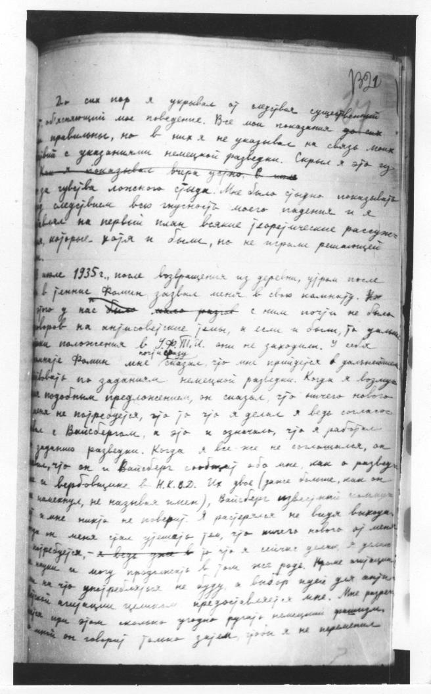
Чтение снимка, местами неуверенное. Сверьте со снимком.
До сих пор я укрывал от следствия существенный
[нрзб] мое поведение. Все мои показания даны
правильно, но в них я не указывал на связь мою
[нрзб] с заданиями немецкой разведки. Скрыл я это из
[нрзб] чувства [нрзб]. В [нрзб]
[нрзб] чувства ложного стыда. Мне было стыдно [нрзб]
[нрзб] следствии всю гнусность моего падения и я
[нрзб] на первой же всякие теоретические рассуждения
[нрзб], хотя и были, но не играли решающей
[нрзб]
[нрзб] 1935 г., после возвращения из деревни, [нрзб] после
[нрзб] Фоминым вызвал меня в свою комнату. [нрзб]
что у нас [нрзб] разговор с ним почти не [нрзб]
[нрзб] на антисоветские темы, я если и был, то дальше
[нрзб] настроения в У.Ф.Т.И. они не заходили. У себя
[нрзб] Фомин мне [нрзб] сказал, что мне придется в дальнейшем
[нрзб] по заданиям немецкой разведки. Когда я [нрзб]
[нрзб] подобным предложением, он сказал, что ничего нового
[нрзб] не потребуется, что то что я делал я буду согласен
[нрзб] с Вайсбергом, а это и означало, что я работаю
[нрзб] разведки. Когда я все же не согласился, он
[нрзб], что он и Вайсберг сломают обо мне, как о развед-
[нрзб] и вербовщике в Н.К.В.Д. Их двое (заметьте, как он
[нрзб], не называя имен), Вайсберг [нрзб]
[нрзб] никто не поверит. Я разумеется не видел выхода
[нрзб] от меня [нрзб] уже, что ничего нового от меня
[нрзб], — [нрзб] то что я сейчас делаю, я делаю
[нрзб] и могу пригодиться [нрзб] все реже. Кроме [нрзб]
[нрзб] что [нрзб] не иду, а быстро идей для анти-
[нрзб] агитации [нрзб] [нрзб] мне. Мне [нрзб]
[нрзб] этом сколько угодно [нрзб] [нрзб]
[нрзб] он говорил такие [нрзб] что я не [нрзб]
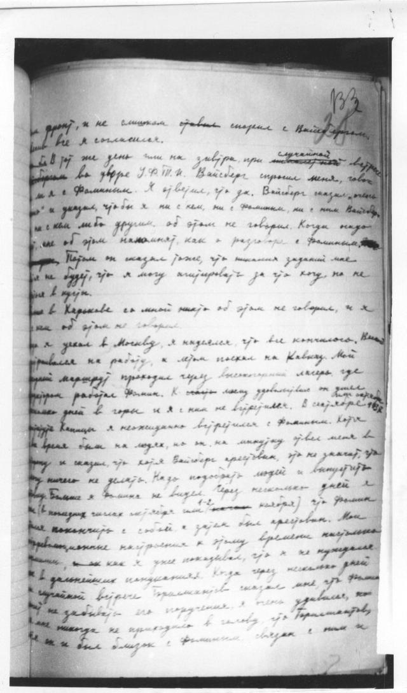
Чтение снимка, местами неуверенное. Сверьте со снимком.
[нрзб], и не [нрзб] [нрзб] спорил с Вайсбергом
Все я согласился.
В этот же день или на другой, при [нрзб]
[нрзб] во дворе У.Ф.Т.И. Вайсберг спросил меня, [нрзб]
[нрзб] с Фоминым. Я ответил, что да. Вайсберг сказал, что
[нрзб] я должен, чтобы я ни с кем, ни с Фоминым, ни с ним Вайсбергом
[нрзб] либо другим об этом не говорил. Когда [нрзб]
[нрзб] об этом накануне, как о разговоре с Фоминым, [нрзб]
Потом он сказал позже, что никаких заданий мне
[нрзб] не будет, что я могу [нрзб] за это кому, но не
[нрзб] в группе.
[нрзб] Каганович со мной [нрзб] об этом не говорил, и я
[нрзб] об этом не говорил.
[нрзб] я уехал в Москву, я [нрзб], что все кончилось. [нрзб]
[нрзб] на работу, а [нрзб] поехал на Кавказ. Мой
[нрзб] [нрзб] проходил через [нрзб] лагерь, где
[нрзб] работал Фомин. К [нрзб] месту [нрзб] он [нрзб]
[нрзб] дней в городе и я с ним не встречался. В [нрзб]
[нрзб] конца я неожиданно встретился с Фоминым. Когда
[нрзб] были на людях, но он не [нрзб] увез меня в
[нрзб] и сказал, что хотя Вайсберг арестован, это не значит, что
[нрзб] ничего не делать. Надо подобрать людей и [нрзб]
[нрзб] Фомина я больше не видел. Через несколько дней [нрзб]
[нрзб] (1-2 [нрзб] ноября) это Фомин
[нрзб] [нрзб] [нрзб] [нрзб] арестован. Меня
[нрзб] с собой и уехал [нрзб] арестован. Меня
[нрзб] настроения к [нрзб] буржуазные настроения
[нрзб] я уже [нрзб], что я не [нрзб]
[нрзб] настроением. Когда через несколько дней
[нрзб] встретил [нрзб] [нрзб] мне, что Фомин
[нрзб] это [нрзб] и [нрзб] уехал, но
[нрзб] не [нрзб] и [нрзб] что [нрзб]
[нрзб] не [нрзб] [нрзб] [нрзб] [нрзб]
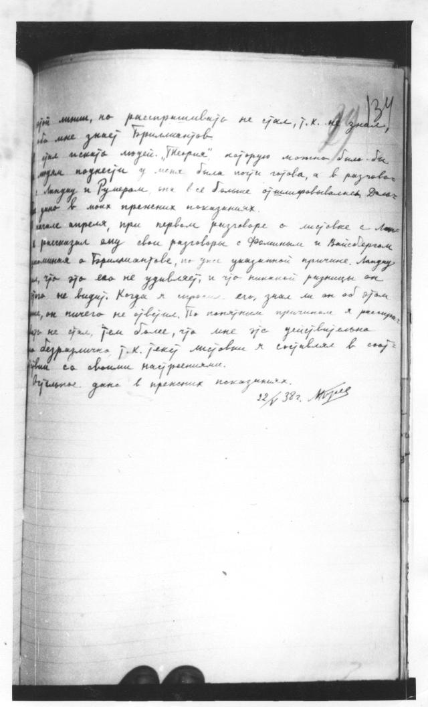
Чтение снимка, местами неуверенное. Сверьте со снимком.
[нрзб] имени, но расспрашивать не стал, т.к. [нрзб]
[нрзб] мне знает Брилиантов
[нрзб] между людей. „Теория“, которую можно было бы
[нрзб] подвести у [нрзб] была почти готова, а в разговоре
с Ландау и Румером она все больше оформлялась. [нрзб]
[нрзб] в моих прежних показаниях.
[нрзб] апреля, при первом разговоре о листовке с Лан-
[нрзб] рассказал ему свои разговоры с Фоминым и Вайсбергом
[нрзб] о Брилиантове, по уже указанной причине. Ландау
[нрзб], что это его не удивляет, и что никакой разницы он
[нрзб] не видит. Когда я спросил его, знал ли он об этом
[нрзб], он ничего не ответил. По некоторым причинам я рассказы-
[нрзб] не стал, тем более, что мне это действительно
не [нрзб], т.к. текст листовки я составлял в соот-
ветствии со своими настроениями.
[нрзб] дано в прежних показаниях.
12/V 38 г. Корин
Чтение снимка, местами неуверенное. Сверьте со снимком.
стр. 1
Собственноручные показания
арестованного Кореца, Моисея Абрамовича
от 2 июня 1938 г.
Как оформились мои контрреволюционные настроения
и как и когда началась моя контрреволюционная
деятельность.
В [нрзб] 1935 г. я переехал на работу в г. Харьков
Украинский Физико-Технический институт. Там
[нрзб] и вскоре сблизился с рядом контр-
революционно настроенных научных руководителей инсти-
тута — Шубниковым, Обреимовым, Ландау и с иностран-
ными специалистами Вайсбергом, Румером и Кауфманом.
[нрзб] близок я был и чаще чем с другими встре-
чался с Ландау, с Шубниковым и Вайсбергом. Эти
[нрзб] вели со мной разговоры о том, что раз-
витие науки тормозится советским правительством, что
[нрзб] партии в вопросах науки неверна и что
[нрзб] надо бороться. От критики линии пар-
тии и правительства в вопросах науки, обычно перехо-
дили к критике мероприятий советской власти во-
обще.
Под влиянием этой контрреволюционной агитации
[нрзб] и мои собственные контрреволюционные
[нрзб]
[нрзб] моя эта группа научных руководителей
[нрзб] борьбу против технических и [нрзб]
[нрзб] проводившихся в институте. Это по существу
[нрзб] [нрзб] и уменьшению его [нрзб]
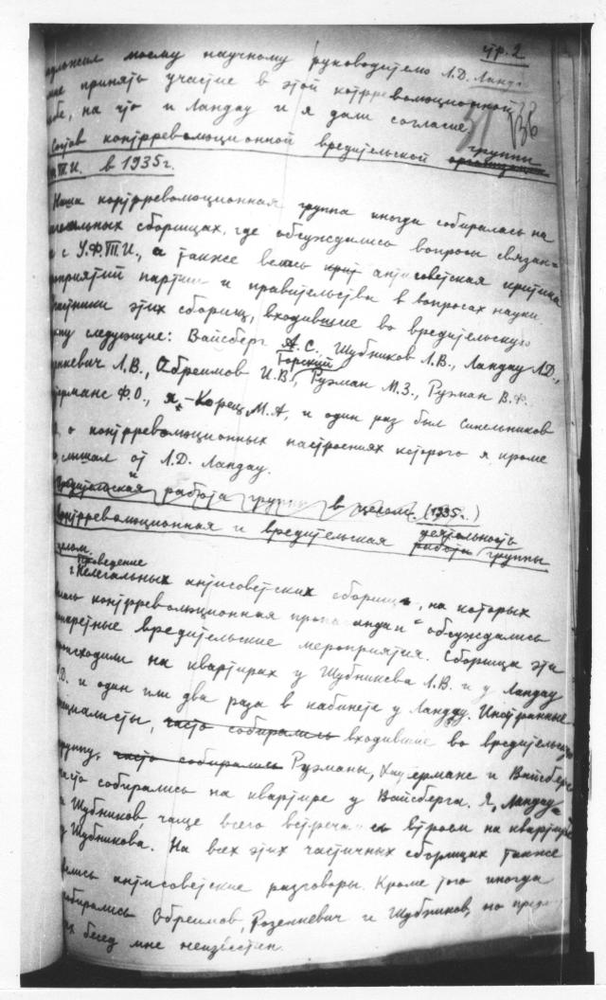
Чтение снимка, местами неуверенное. Сверьте со снимком.
стр. 2
[нрзб]динению моему научному руководителю Л.Д. Ландау.
[нрзб] принял участие в этой контрреволюционной
[нрзб]бе, на что и Ландау и я дали согласие
[нрзб]сов контрреволюционной вредительской группы
[нрзб]ТИ. в 1935 г.
Наша контрреволюционная группа иногда собиралась на
нелегальных собраниях, где обсуждались вопросы связанные
с У.Ф.Т.И., а также велась кр-р антисоветская критика
мероприятий партии и правительства в вопросах науки.
Участниками этих собраний, входившими во вредительскую
группу следующие: Вайсберг А.С. Шубников Л.В., Ландау Л.Д.,
[нрзб]невич Л.В., Обреимов И.В., Горский, Рузман М.З., Рузман В.Ф.
[нрзб]ермане Ф.О., я, Корец М.Ф. и один раз был Синельников
[нрзб] о контрреволюционных настроениях которого я кроме
[нрзб]шал от Л.Д. Ландау.
Вредительская работа группы в Харькове (1935.)
Контрреволюционная и вредительская деятельность работы группы
1. [нрзб]ведение
Нелегальных антисоветских собраний, на которых
[нрзб] контрреволюционная пропаганда и обсуждались
[нрзб] вредительские мероприятия. Собрания эти
происходили на квартирах у Шубникова Л.В. и у Ландау
[нрзб]. и один или два раза в кабинете у Ландау. Иностранцы
[нрзб]машей, часто собирались входившие во вредительскую
группу, часто собирались Рузманы, Руермане и Вайсберг
часто собирались на квартире у Вайсберга. Я, Ландау
и Шубников чаще всего встречались втроем на квартире
у Шубникова. На всех этих частных собраниях раньше
[нрзб]лись антисоветские разговоры. Кроме того иногда
[нрзб]бирались Обреимов, Розенкевич и Шубников, но присут
[нрзб] беседу мне не удавался.
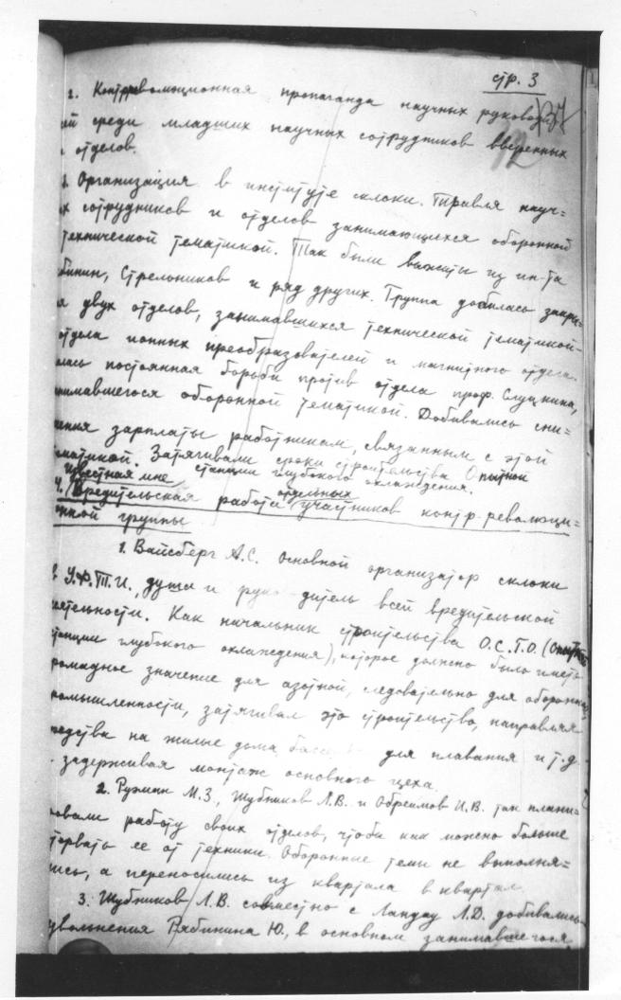
Чтение снимка, местами неуверенное. Сверьте со снимком.
стр. 3
2. Контрреволюционная пропаганда научных руководителей
[нрзб]й среди младших научных сотрудников [нрзб]
[нрзб] отделов.
3. Организация в институте склоки. Травля науч-
[нрзб] сотрудников и отделов занимающихся оборонной
[нрзб]ческой тематикой. Так были выжиты из ин-та
[нрзб]бин, Стрелковиков и ряд других. Группа добилась закры-
[нрзб] двух отделов, занимавшихся технической тематикой
[нрзб]дела ионных преобразователей и магнитного отдела.
[нрзб]лась постоянная борьба против отдела проф. Слуцкина,
занимавшегося оборонной тематикой. Добивались сни-
[нрзб] зарплаты работникам, связанным с этой
тематикой. Затягивали сроки строительства Опытной
станции глубокого охлаждения.
4. Вредительская работа отдельных участников контрреволюци-
онной группы
1. Вайсберг А.С. основной организатор склоки
в У.Ф.Т.И., души и руководитель всей вредительской
деятельности. Как начальник строительства А.С.Т.О. (Опытной
станции глубокого охлаждения), которое должно было иметь
громадное значение для азотной, следовательно для оборонной
промышленности, затягивал это строительство, направлял
средства на мелкие [нрзб] для плавания и т.д.
задерживая монтаж основного цеха.
2. Рузман М.З., Шубников Л.В. и Обреимов И.В. так изменяли
[нрзб]вали работу своих отделов, чтобы [нрзб] можно больше
[нрзб]рвала ее от режима. Оборонные темы не выполнялись,
[нрзб]лись, а переносились из квартала в квартал.
3. Шубников Л.В. совместно с Ландау Л.Д. добивались
увольнения Рябинина Ю., в основном занимавшегося [нрзб]
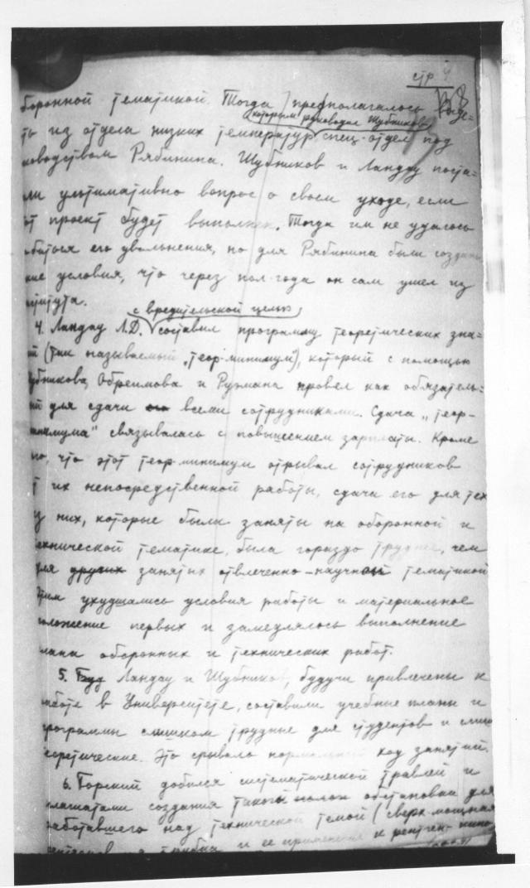
Чтение снимка, местами неуверенное. Сверьте со снимком.
стр. 4
[нрзб]ронной тематикой. Тогда предполагалось [нрзб]
[нрзб] из отдела низких температур спец. отдел под
руководством Рябинина. Шубников и Ландау поставили
ему ультимативно вопрос о своем уходе, если
этот проект будет выполнен. Тогда им не удалось
добиться его увольнения, но для Рябинина были созданы
такие условия, что через пол года он сам ушел из
института.
4. Ландау Л.Д. с вредительской целью
составил программу теоретических занятий
(так называемый „терм-минимум“), который с помощью
Шубникова, Обреимова и Рузмана провел как обязатель-
ный для сдачи его всеми сотрудниками. Сдача „терм-
минимума“ связывалась с повышением зарплаты. Кроме
того, что этот терм-минимум отрывал сотрудников
от их непосредственной работы, сдача его для тех
из них, которые были заняты на оборонной и
технической тематике, была гораздо труднее, чем
для других занятых общественно-научной тематикой
при ухудшающихся условиях работы и материальном
положении первых и замедлялось выполнение
плана оборонных и технических работ.
5. Будучи Ландау и Шубниковым, будучи привлечены к
работе в Университете, составили учебные планы со
[нрзб] слишком трудные для студентов и [нрзб]
теоретические. Это срывало нормальную [нрзб] занятий.
6. Горский добился экспериментальной травли и
[нрзб] создания [нрзб] (сверх [нрзб]
[нрзб] над технической темой ([нрзб]
[нрзб]
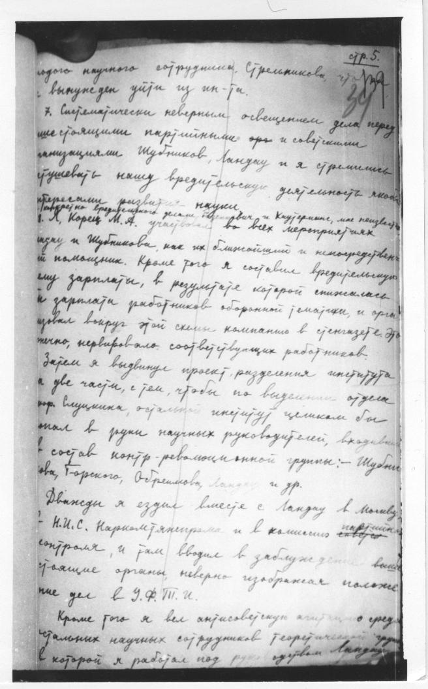
Чтение снимка, местами неуверенное. Сверьте со снимком.
стр. 5.
[нрзб]ного научного сотрудника. Стрелковикова
[нрзб] вынужден уйти из ин-та.
7. Систематически неверным освещением дела перед
вышестоящими партийными орг и советскими
организациями Шубников, Ландау и я стремились
прикрывать нашу вредительскую деятельность якобы
[нрзб] развития науки.
8. Я, Корец М.Ф. участвовал во всех мероприятиях
Ландау и Шубникова, как их ближайший и непосредственный
помощник. Кроме того я составил вредительскую
[нрзб] зарплаты, в результате которой снижалась
[нрзб] зарплата работников оборонной тематики, и органи-
зовал вокруг этой схемы кампанию в стенгазете. Это
[нрзб], нервировало соответствующих работников.
Затем я выдвинул проект разделения института
на две части, с тем, чтобы по выделении отдела
проф. Слуцкина, оставить институту целиком [нрзб]
[нрзб] в руки научных руководителей, входивших
в состав контр-революционной группы: — Шубни-
кова, Горского, Обреимова, Ландау и др.
Дважды я ездил вместе с Ландау в Москву
в Н.И.С. Наркомтяжпрома и в комиссию партийного
контроля, и там вводил в заблуждение выше-
стоящие органы, неверно изображая положение
дел в У.Ф.Т.И.
Кроме того я вел антисоветскую агитацию среди
[нрзб] научных сотрудников теоретической группы
в которой я работал под руководством Ландау.
Чтение снимка, местами неуверенное. Сверьте со снимком.
стр. 6
[нрзб] я был завербован немецкой разведкой
В конце июля 1935 г. утром, после игры в теннис
[нрзб] зашел к себе в комнату Фомин В. Фомин жил
в одном коридоре со мной, но до тех пор наши разговоры
[нрзб] не носили откровенно антисоветского характера.
Фомин прямо заговорил о том, что я должен
[нрзб] в своих действиях немецкой разведке.
[нрзб] удивился, подумал что он шутит, и возмутился. Но
[нрзб] сказал, что говоря раз я уже согласовывал свои
[нрзб] с Вайсбергом, я тем самым уже являюсь
[нрзб] разведки, т.к. Вайсберг ее представитель. Если
не соглашусь, продолжал он, то Вайсберг и он выдадут
меня Н.К.В.Д., и им поверят [нрзб] чем мне, т.к.
Вайсберг коммунист и довольно известный. В утешение
же Фомин добавил, что ничего особенного мне пору-
чать не будет, что я могу действовать так же как
раньше согласно собственным контрреволюцион-
ным настроениям, а что он со мной разговаривает
только для того, что-бы я не мог, когда захочу,
отказаться от этого дела. Тогда я согласился.
В тот же день, или на завтра при случайной встрече
во дворе У.Ф.Т.И. Вайсберг спросил меня, говорил ли
я с Фоминым. Затем он подтвердил то что говорил
Фомин, и добавил, что я должен информировать его,
Вайсберга, об антисоветских настроениях людей, с котор-
ыми я встречаюсь. Такие информации я ему
давал два или три раза, всегда во дворе У.Ф.Т.И.
ограничиваясь по главным [нрзб]. Назвал я ему
[нрзб]
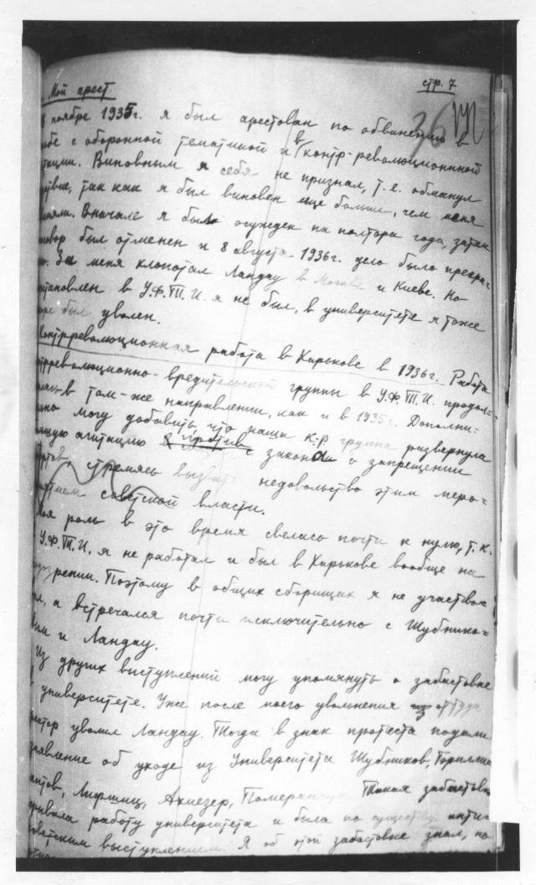
Чтение снимка, местами неуверенное. Сверьте со снимком.
стр. 7
Мой арест
В ноябре 1935 г. я был арестован по обвинению в
связи с оборонной тематикой и контр-революционной
[нрзб]. Виновным я себя не признал, т.е. обманул
следствие, так как я был виновен еще больше, чем меня
[нрзб]. Вначале я был осужден на полтора года, затем
приговор был отменен и 8 августа 1936 г. дело было прекра-
щено. За меня хлопотали Ландау в Москве и Киеве. Но
восстановлен в У.Ф.Т.И. я не был, в университете я тоже
вскоре был уволен.
Контрреволюционная работа в Харькове в 1936 г. Работа
контрреволюционно-вредительской группы в У.Ф.Т.И. продолжа-
лась в том-же направлении, как и в 1935. Дополни-
тельно могу добавить что наша к-р группа развернула
большую агитацию в связи с законом о запрещении
абортов, стремясь вызвать недовольство этим меро-
приятием советской власти.
Моя роль в это время свелась почти к нулю, т.к.
в У.Ф.Т.И. я не работал и был в Харькове вообще на
[нрзб]. Поэтому в общих собраниях я не участвовал
и встречался почти исключительно с Шубниковым
и Ландау.
Из других выступлений могу упомянуть о забастовке
в университете. Уже после моего увольнения из [нрзб]
[нрзб] уволили Ландау. Тогда в знак протеста подали
заявление об уходе из Университета Шубников, Горский
[нрзб], Лифшиц, Ахиезер, Померанчук. Такая забастовка
сорвала работу университета и была по существу [нрзб]
[нрзб] выступлением. Я об этой забастовке знал, но
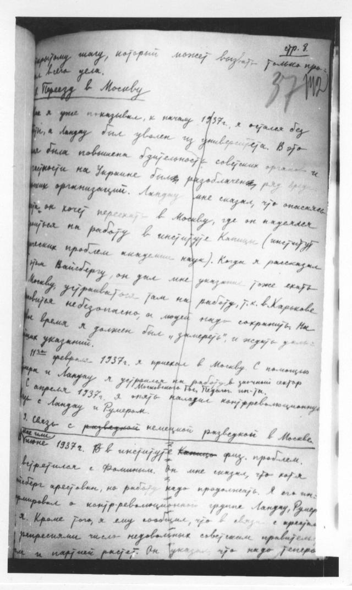
Чтение снимка, местами неуверенное. Сверьте со снимком.
стр. 8.
[нрзб] тему, который может вызвать только про-
вал всего дела.
Переезд в Москву
Как я уже показывал, к началу 1937 г. я остался без
работы, а Ландау был уволен из университета. В это
время была повышена бдительность советских органов и
контрреволюционные организации на Украине были разоблачены ряд других
[нрзб] организаций. Ландау мне сказал, что опасается
ареста и хочет переехать в Москву, где он надеялся
устроиться на работу в институте Капицы (институт
физических проблем академии наук). Когда я рассказал
об этом Вайсбергу, он дал мне указание тоже ехать
в Москву, устраиваться там на работу, т.к. в Харькове
оставаться небезопасно, а людей надо сохранить. На
[нрзб] время я должен был „замереть“, и следуя ука-
заниям.
11-го февраля 1937 г. я приехал в Москву. С помощью
Капицы и Ландау я устроился на работу в ученом секторе
[нрзб] Монетного [нрзб]. Пединст. ин-та.
С апреля 1937 г. я опять наладил контрреволюционную
связь с Ландау и Румером.
3. Связь с разведкой немецкой разведкой в Москве.
[нрзб] июне 1937 г. В в институте физ. проблем
я встретился с Фоминым. Он мне сказал, что хотя
Вайсберг арестован, но работу надо продолжать. Я его ин-
формировал о контрреволюционной группе Ландау, Румер
и я. Кроме того, я ему сообщил, что в связи с арестами
[нрзб] много недовольных советским правитель-
ством и партией людей. Он указал, что надо [нрзб]
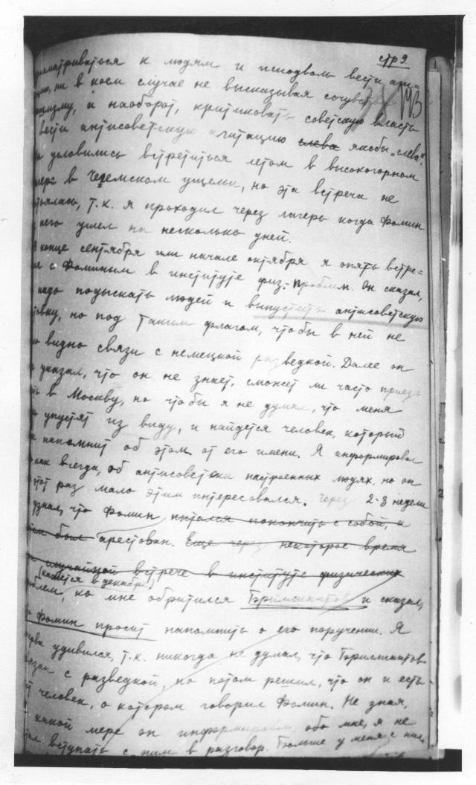
Чтение снимка, местами неуверенное. Сверьте со снимком.
стр. 9
[нрзб] к людям и никогда не [нрзб]
[нрзб], ни в коем случае не высказывал сочувствия
[нрзб], и наоборот, критиковал советскую власть
[нрзб] антисоветскую агитацию [нрзб]
Мы условились встретиться летом в высокогорном
лагере в Тебердинском ущелье, но эта встреча не
состоялась, т.к. я проходил через лагерь когда Фомин
уже ушел на несколько дней.
В конце сентября или начале октября я опять встре-
тился с Фоминым в институте физ. проблем. Он сказал,
что надо подыскать людей и выпустить антисоветскую
листовку, но под таким углом, чтобы в ней не
было видно связи с немецкой разведкой. Далее он
указал, что он не знает, сможет ли часто приез-
жать в Москву, но чтобы я не думал, что меня
упустят из виду, и найдется человек, который
напомнит об этом от его имени. Я информировал
его всегда, об антисоветских настроениях людей, но он
в этот раз мало этим интересовался. Через 2-3 недели
я узнал, что Фомин [нрзб] арестован. Еще через некоторое время
при следующей встрече в институте физических
проблем, (кажется в декабре) [нрзб], ко мне обратился Торчинский и сказал,
что Фомин просил напомнить о его поручении. Я
сначала удивился, т.к. никогда не думал, что Торчинский
связан с разведкой, но потом решил, что он и есть
тот человек, о котором говорил Фомин. Не знаю,
в какой мере он информирован обо мне, я не
[нрзб] в разговор. Больше у меня с ним
[нрзб]
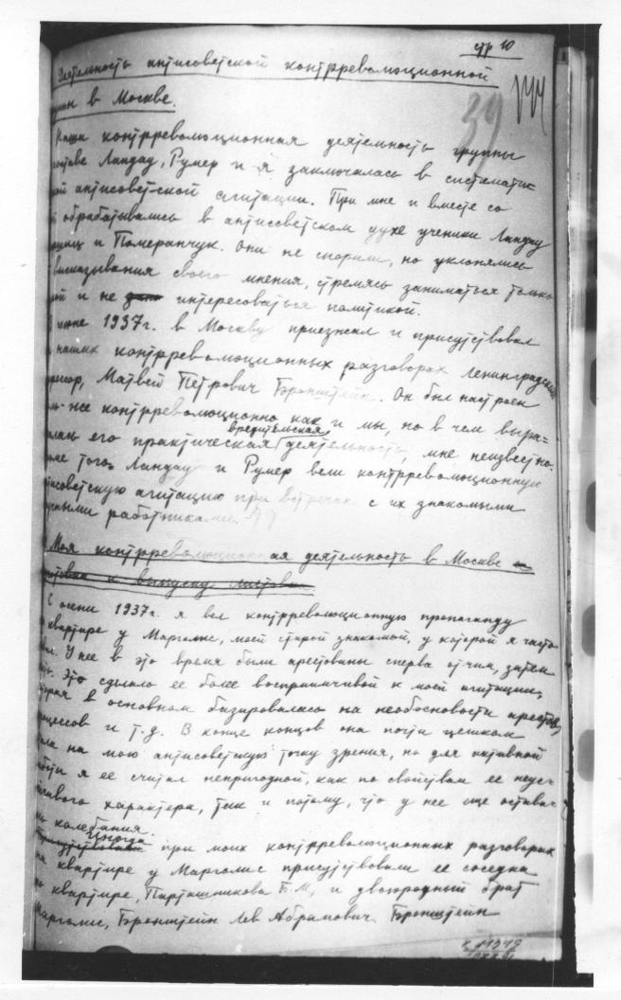
Чтение снимка, местами неуверенное. Сверьте со снимком.
стр. 10
Деятельность антисоветской контрреволюционной
группы в Москве.
Наша контрреволюционная уязвимость группы
в составе Ландау, Румер и я заключалась в систематиче-
ской антисоветской агитации. При мне и вместе со
мной обрабатывались в антисоветском духе ученики Ландау
[нрзб] и Померанчук. Они не спорили, но уклонялись
от высказывания своих мнений, стремясь заниматься только
наукой и не [нрзб] интересоваться политикой.
Летом 1937 г. в Москву приезжал и присутствовал
при наших контрреволюционных разговорах ленинградский
физик, Матвей Петрович Бронштейн. Он был настроен
антисоветски контрреволюционно как и мы, но в чем выража-
лась его практическая вредительская деятельность, мне неизвестно.
Кроме того Ландау и Румер вели контрреволюционную
антисоветскую агитацию при встречах с их знакомыми
научными работниками.
Моя контрреволюционная деятельность в Москве
[нрзб]
С осени 1937 г. я вел контрреволюционную пропаганду
на квартире у Маргалис, моей старой знакомой, у которой я тогда
жил. Уже в это время были арестованы сперва один, затем
другие. Это сделало ее более восприимчивой к моей агитации,
которая в основном базировалась на необоснованности арестов
ученых и т.д. В конце концов она почти целиком
встала на мою антисоветскую точку зрения, но для активной
работы я ее считал непригодной, как по свойствам ее нереши-
тельного характера, так и потому, что у нее еще оставались
[нрзб] колебания.
Иногда при моих контрреволюционных разговорах
на квартире у Маргалис присутствовали ее соседка
по квартире, Парфенникова Е.М., и двоюродный брат
Маргалис, Бронштейн Лев Абрамович. Бронштейн
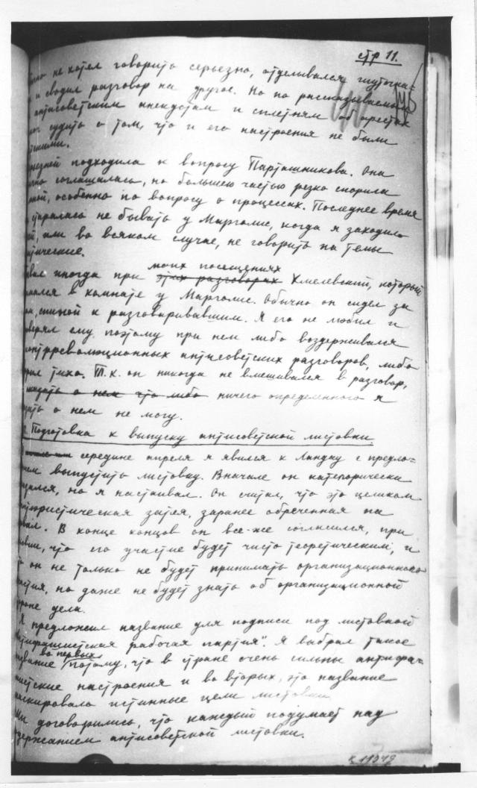
Чтение снимка, местами неуверенное. Сверьте со снимком.
стр. 11.
[нрзб] не всегда говорил серьезно, отшучивался [нрзб]
и сводил разговор на другое. Но по высказываемым
им антисоветским анекдотам и скептическим [нрзб]
я судил о том, что и его настроение не было
[нрзб].
[нрзб] подходила к вопросу Парфенникова. Она
[нрзб] соглашалась, но большую частью редко спорила
со мной, особенно по вопросу о процессах. Последнее время
я старался не бывать у Маргалис, когда я заходил
к ней, то во всяком случае, не говорил на такие
[нрзб].
[нрзб] иногда при моих посещениях [нрзб] Киселевский, который
[нрзб] в комнате у Маргалис. Обычно он сидел за
[нрзб] книгой и разговаривал мало. Я его не любил и
[нрзб] ему поэтому при нем либо воздерживался
от контрреволюционных антисоветских разговоров, либо
говорил тихо. Т.к. он никогда не вмешивался в разговор,
[нрзб] ничего определенного я
сказать о нем не могу.
Подготовка к выпуску антисоветской листовки.
[нрзб] середине апреля я явился к Ландау с предложе-
нием выпустить листовку. Вначале он категорически
возражал, но я настаивал. Он сказал, что это слишком
авантюристическая затея, заранее обреченная на
провал. В конце концов он все-же согласился, при
условии, что его участие будет чисто теоретическим, и
что он не только не будет принимать организационного
участия, но даже не будет знать об организационной
стороне дела.
Я предложил название для подписи под листовкой
„антифашистская рабочая партия“. Я выбрал такое
название во первых потому, что в стране очень сильны антифа-
шистские настроения и во вторых, это название
маскировало истинные цели листовки
[нрзб] договоренность, что каждый подумает над
содержанием антисоветской листовки.
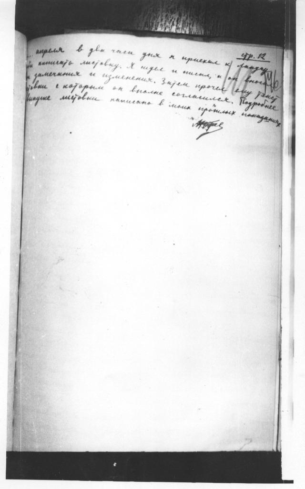
Чтение снимка, местами неуверенное. Сверьте со снимком.
стр. 12
[нрзб] апреля в два часа дня я приехал к Ландау
и принес листовку. Я ждал и писал, и он внес
ряд замечаний и изменений. Затем прочел ему текст
листовки с которыми он вполне согласился. Подробнее
о [нрзб] листовке написано в моих прошлых показаниях.
[нрзб]
стр.152 Допрос 07(?).06.38, третья страница
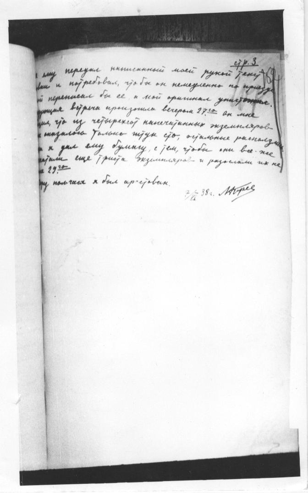
Чтение снимка, местами неуверенное. Сверьте со снимком.
стр. 3
[нрзб] передал написанный моей рукой текст [нрзб]
[нрзб] и потребовал, чтобы он немедленно по приезде
в [нрзб] переписал бы ее, а мой оригинал уничтожил.
Следующая встреча произошла вечером 27-го [нрзб] он мне
сказал, что из четырех написанных экземпляров
в [нрзб] только три, остальные раскидал
[нрзб] и дал ему бумагу, с тем, чтобы они все-же
[нрзб] еще три экземпляра и разослал их не
позже 29-го.
[нрзб] полчаса я был арестован.
7/VI 38. [нрзб]
стр. 148 Допрос 14.06.38 (со второй страницы) стр. 149
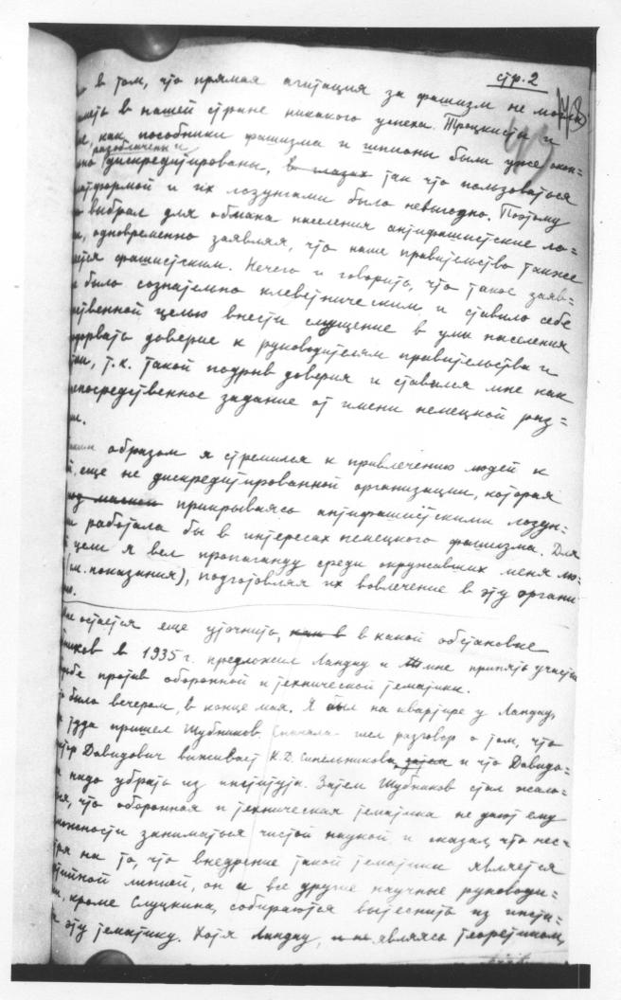
Чтение снимка, местами неуверенное. Сверьте со снимком.
стр. 2
[нрзб] в том, что прямая агитация за фашизм не может
иметь в нашей стране никакого успеха. Троцкисты и
[нрзб], как пособники фашизма и шпионы были уже на-
столько дискредитированы, в глазах [нрзб] что пользоваться
[нрзб] и их лозунгами было невыгодно. Поэтому
был выбран для обмана населения антифашистский ло-
зунг, одновременно заявляя, что наше правительство помо-
гает фашистским. Нечего и говорить, что такое заяв-
ление было сознательно клеветническим и ставило себе
определенной целью внести смущение в умы населения
и подорвать доверие к руководителям правительства и
партии, т.к. такой подрыв доверия и смущения мне как
непосредственное задание от имени немецкой раз-
ведки.
[нрзб] образом я стремился к привлечению людей к
[нрзб] еще не дискредитированной организации, которая
[нрзб] прикрываясь антифашистскими лозун-
гами работала бы в интересах немецкого фашизма. Для
этой цели я вел пропаганду среди окружавших меня людей
(см. показания), подготовляя их вовлечение в эту органи-
зацию.
[нрзб] еще уточню, [нрзб] в какой обстановке
[нрзб] в 1935 г. предложение Ландау и [нрзб] принял участие
в борьбе против оборонной и технической тематики.
[нрзб] вечером, в конце мая, я был на квартире у Ландау,
куда пришел Шубников. Сначала шел разговор о том, что
профессор Давидович выживает К.Д. Синельникова [нрзб] и что Давидо-
вича надо убрать из института. Затем Шубников стал жало-
ваться, что оборонная и техническая тематика не дают ему
возможности заниматься чистой наукой и сказал, что несмо-
тря на то, что внедрение такой тематики является
партийной линией, он и все другие научные руководи-
тели, кроме Слуцкина, собираются бойкотировать эту темати-
ку. Кроме Ландау, [нрзб] являлся теоретиком
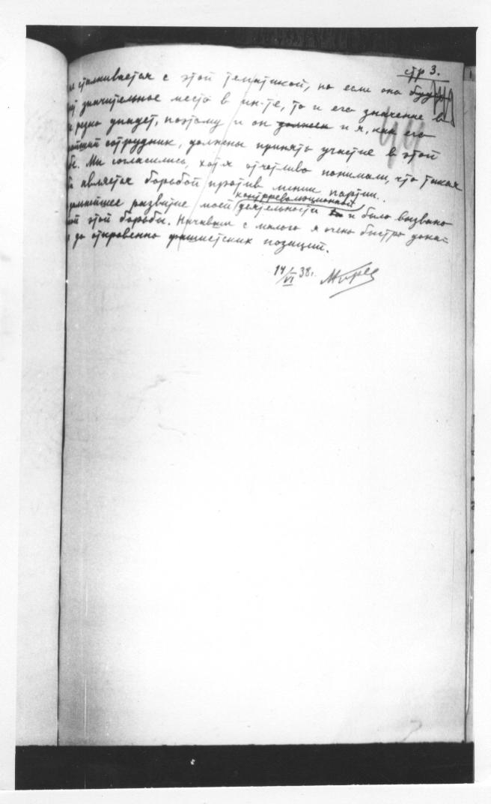
Чтение снимка, местами неуверенное. Сверьте со снимком.
стр. 3.
[нрзб] занимался с этой тематикой, но если она будет
[нрзб] значительное место в ин-те, то и его значение [нрзб]
[нрзб] руко упадет, поэтому и он должен и я, как его
ближайший сотрудник, должны принять участие в этой
борьбе. Мы согласились, хотя отчетливо понимали, что такая
борьба является борьбой против линии партии.
[нрзб] развитие моей контрреволюционной деятельности [нрзб] и было вызвано
этой борьбой. Начавши с малого я очень быстро дошел
до откровенно фашистских позиций.
14/VI 38. [нрзб]
Чтение снимка, местами неуверенное. Сверьте со снимком.
52
Протокол Дополнительного Допроса
обв. Корец М.Ф. от 13/XI 1938 г.
Вопрос: Корец на предыдущем допросе Вы не все
рассказали следствию о Вашей шпионской
работе?
Ответ: Подтверждая ранее данные мной показания
я должен заявить следствию, что мной рассказано
все, и никаких новых [нрзб], особо
[нрзб] работе, я дополнительных следствию
не имею.
Вопрос: Расскажите когда и при каких обстоятельствах
Вы были привлечены в качестве немецкого
агента.
Ответ: [нрзб] Я уже говорил,
что буду участником антисоветской группы
существовавшей в то время при Украинском Физи-
ко-техническом ин-те г. Харькова. Я одним из ее
участников — Фоминым в 1935 г. в конце июля
был поставлен в известность, что наша антисоветская
группа ведет свою контрреволюционную дея-
тельность по прямому заданию Немецкой развед-
ки и что руководителем ее, как представитель
немецкой разведки является Вайсберг. Вторич-
но раз мне было Фоминым предложено вести
работу в пользу германской разведки, на что как
[нрзб] ранее я и дал свое согласие.
Вскоре вскоре это же мной было установлено еще
с Вайсбергом.
Вопрос: Какие конкретные задания Вы получали
от Фомина и Вайсберга.
[нрзб]
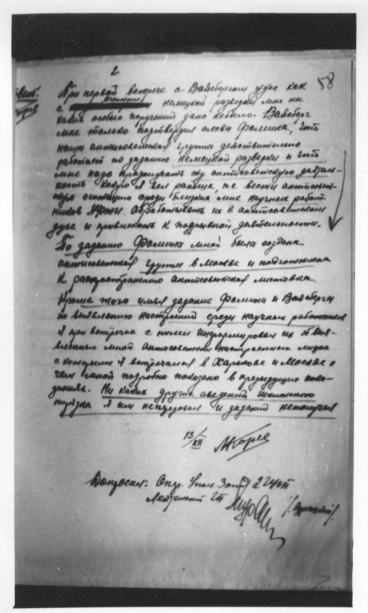
2
58
[на полях] [нрзб]
При первой встрече с Вайсбергом уже как
с [зачеркнуто: [нрзб]] настоящий раз, последний рассказал мне ни
какой особой поручений дано не было. Вайсберг
мне только подтвердил слова Фомина, что
наша антисоветская группа действительно
работает по заданию немецкой разведки и что
мне надо продолжать ту антисоветскую деятель-
ность какую я вел раньше, т.е. вести антисовет-
скую агитацию среди близких мне научных работ-
ников УФТИ. Обязательно их в антисоветском
духе и привлекать к подрывной деятельности.
По заданию Фомина мной была создана
антисоветская группа [нрзб] и подготовлена
к распространению антисоветской листовки.
Кроме того имел задание Фомина и Вайсберга
по выявлению настроений среди научных работников
и при встречах с ними информировал их о выяв-
ленных мной антисоветски настроенных лицах
с которыми я встречался в Харькове и Москве о
чем мной подробно показано в предыдущих пока-
заниях. Ни каких других сведений интимного
порядка я им не передавал. По заданию немецкой
13/XII Корец
Вопросы: Опер. Уполн. 3 отд. 2 отд. ГУГБ
лейтенант ГБ [подпись] /Муравьев/
стр.60 Протокол предъявления материалов следствия
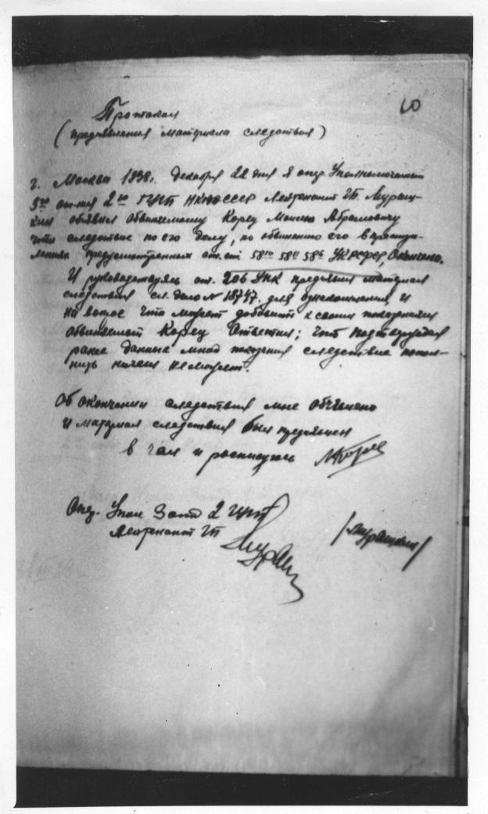
Протокол
(предъявления материала следствия)
60
г. Москва 1938 г. Декабря 22 дня. Я опер. уполномоченный
3-го отд. 2-го отд. ГУГБ НКВД СССР лейтенант ГБ Муравьев
объявил обвиняемому Корец Моисею Абрамовичу,
что следствие по его делу, по обвинению его в [нрзб]
предусмотренных ст.ст. 58-10, 58-11 УК РСФСР, окончено.
И руководствуясь ст. 206 УПК предъявил материал
следствия сл. дело № 13749 для ознакомления и
на вопрос что может добавить к своим показаниям
обвиняемый Корец ответил: что подтверждаю
ранее данные мной показания следствию [нрзб]
ничего не имею.
Об окончании следствия мне объявлено
и материал следствия мне предъявлен
в чем и расписуюсь Корец
Опер. Уполн. 3 отд. 2 отд. ГУГБ
лейтенант ГБ [подпись] /Муравьев/
Текст снят со снимков дела. Неразобранные слова отмечены [нрзб]. Там, где страница слишком бледная, оставлен только снимок.